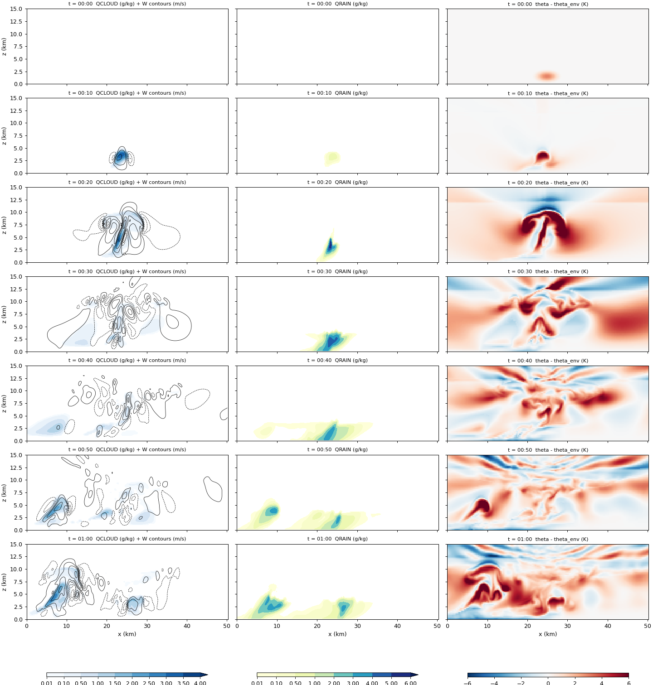
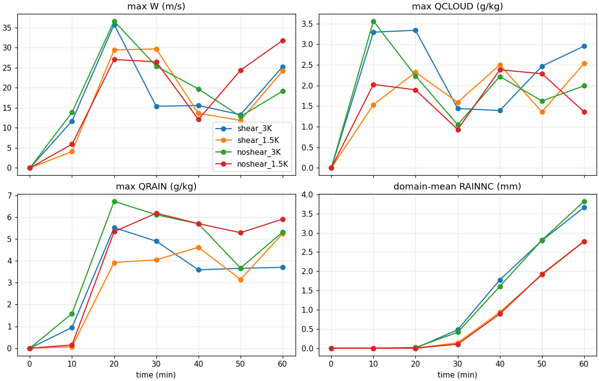
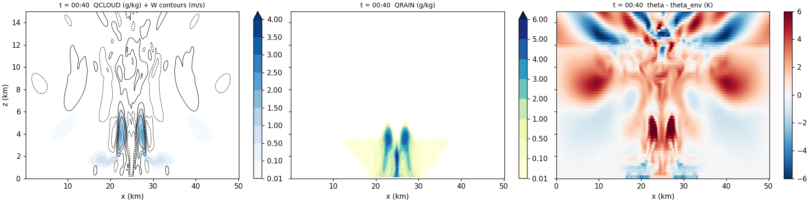
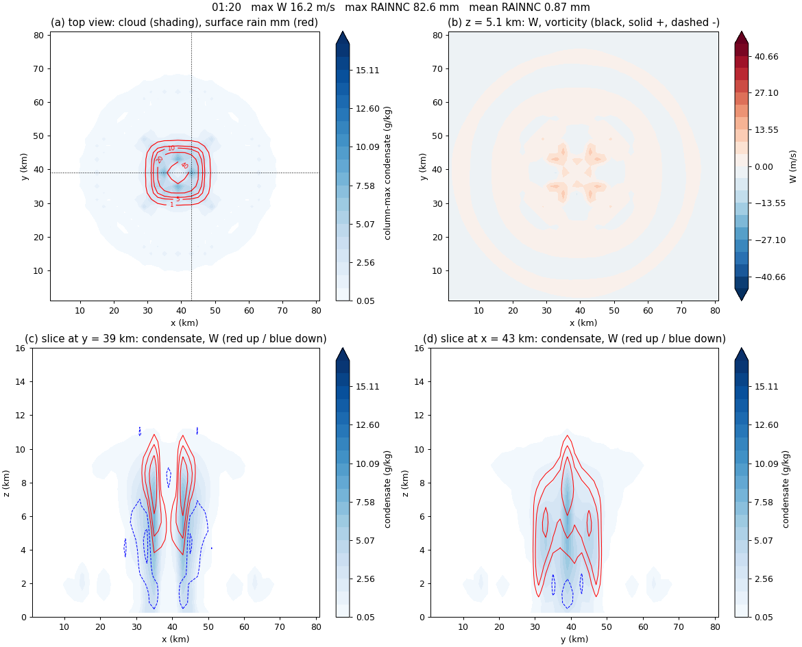

WRF 이상화 2-D 스콜선: 시어와 열기포가 바꾸는 것
목표는 Ren et al. (2025)의 2-D 흡습성 시딩 실험을 WRF로 다시 해 보는 것이다. 이 논문도 사운딩 하나와 열기포(warm bubble)로 구름을 만드는 이상화(idealized) 구성이라, 실제 사례용 전처리(WPS) 없이 WRF에 들어 있는 2-D 스콜선 예제 em_squall2d_x부터 시작했다. 이 글은 기본 예제를 연구실 서버에서 돌린 L1, 바람 시어와 열기포 세기를 바꾼 L2, 그리고 곁가지로 돌린 3-D 슈퍼셀 예제를 정리한다.
이상화 WRF의 실행 흐름
실제 사례: 재분석 자료 → WPS → real.exe → wrfinput + wrfbdy → wrf.exe → wrfout
이상화: input_sounding + namelist.input → ideal.exe → wrfinput → wrf.exe → wrfout| 파일 | 역할 |
|---|---|
input_sounding |
연직 프로파일 한 개(고도별 온위, 혼합비, u, v). ideal.exe가 모든 격자점에 똑같이 깐다 |
namelist.input |
격자, 시간, 물리 옵션. ideal.exe와 wrf.exe가 함께 읽는다 |
ideal.exe |
사운딩 위에 열기포를 얹어 초기장 wrfinput_d01을 만든다 |
wrf.exe |
시간 적분 후 wrfout_d01_*(NetCDF)을 쓴다 |
rsl.out.*, rsl.error.* |
MPI 프로세스마다 하나씩 생기는 로그 |
namelist.output |
WRF가 실제로 적용한 모든 설정(직접 쓰지 않은 기본값 포함) |
mpirun -np 4 ./ideal.exe
mkdir -p log_ideal; mv rsl.* log_ideal/ # ideal.exe 로그는 wrf.exe가 덮어쓰기 전에 옮겨 둔다
grep -q "SUCCESS COMPLETE IDEAL INIT" log_ideal/rsl.error.0000 || echo "ideal.exe 실패"
mpirun -np 4 ./wrf.exe
tail -1 rsl.out.0000 # SUCCESS COMPLETE WRF 이면 성공
for f in rsl.error.*; do echo "== $f"; tail -3 $f; done # 0번만 보지 말 것
grep -iE "mp_physics|time_step|e_sn" namelist.output # 실제로 들어간 값rsl.error.0000에 에러가 없어도 다른 프로세스 로그에만 에러가 찍힐 수 있다(다음 글의 fast SBM이 그랬다). 그리고 “이 옵션 기본값이 뭐였지?”는 문서보다 namelist.output을 grep하는 편이 빠르다.
2-D 예제를 그대로 돌리면 멈춘 곳
| 위치 | 예제 값 → 바꾼 값 | 이유 |
|---|---|---|
&domains e_sn |
3 → 10 | MPI(dmpar) 빌드는 한 프로세스가 맡는 조각이 각 방향 10칸 이상이어야 해서 ideal.exe가 거부한다 |
&domains 끝 |
nproc_x = 4, nproc_y = 1 추가 |
지정하지 않으면 2 × 2로 나누려다 y가 다시 10칸 미만이 된다 |
&physics 끝 |
ghg_input = 0 추가 |
WRF 4.6 기본값(1)은 온실가스 입력을 쓰는 복사 설정을 요구한다. 이 실험은 복사를 끈다 |
| 컴파일 | ./compile em_squall2d_x 대신 ./compile em_quarter_ss |
이름에 2d가 들어간 케이스는 dmpar 빌드에서 거부되고, 그 전에 기존 실행 파일까지 지워진다. ideal.exe는 실행 시 &ideal ideal_case = 4로 squall2d_x 초기장을 고른다 |
y는 주기 경계이고 열기포도 y로 균일해서, e_sn을 10으로 늘려도 결과는 2-D 그대로다. Lin 런의 y 줄끼리 강수 차이가 0인 것을 확인했다. 나머지 설정은 예제 기본값이다: dx = 250 m로 201칸(50 km), 연직 80층(꼭대기 20 km), dt = 3 s, 60분 적분, 10분 출력. 물리 과정은 미세물리(Lin, mp_physics = 2)만 켜고 복사·지표·경계층·적운 모수화는 끈다. 난류는 1.5차 TKE, x는 열린 경계, 위쪽 5 km는 Rayleigh 감쇠층이다. 4코어로 약 75초 걸렸다.
초기장: Weisman–Klemp 사운딩과 열기포
예제 사운딩의 온위·습도는 대류 모델링의 표준인 Weisman–Klemp 해석적 사운딩이다 (Weisman 와/과 Klemp 1982년). 첫 줄은 지면 기압 1000 hPa, 온위 300.5 K, 혼합비 14 g/kg이고, 그 아래로 250 m 간격 80줄이 이어진다.
\[\theta(z) = \theta_0 + (\theta_{tr} - \theta_0)\left(\frac{z}{z_{tr}}\right)^{5/4}, \qquad \mathrm{RH}(z) = 1 - \frac{3}{4}\left(\frac{z}{z_{tr}}\right)^{5/4} \quad (z \le z_{tr})\]
온위는 기준값 \(\theta_0 = 300\) K에서 권계면 값 \(\theta_{tr} = 343\) K까지 고도 \(z\)의 5/4제곱으로 서서히 커진다는 뜻이다. \(z_{tr} = 12\) km는 권계면 고도이고, 그 위는 213 K 등온층이라 온위가 급격히 커진다(매우 안정). 맨 아래 약 350 m는 300.5 K로 일정한 혼합층이다. 상대습도는 지면 근처 거의 100 %에서 권계면 25 %까지 줄어든다. 하층 혼합비는 14 g/kg에서 잘려 1 km 남짓까지 일정하다. 정리하면 하층은 습하고, 대류권은 조건부 불안정하고, 12 km에 뚜껑이 있는 대기다. 파일 값으로 검산하면 375 m에서 \(300 + 43 \times (375/12000)^{5/4} = 300.565\) K로 일치한다.
바람은 0–2.5 km에만 선형 시어가 있다: \(u(z) = -12 + 12\,z/2500\) m/s (2.5 km 위는 0). 첫 층(125 m)의 u는 −11.4 m/s다. 절댓값보다 고도에 따른 차이 12 m/s가 물리적으로 중요하다.
열기포는 namelist가 아니라 dyn_em/module_initialize_ideal.F에 하드코딩되어 있다.
| 항목 | 값 |
|---|---|
| 세기 (중심 온위 편차) | +3 K (delt = 3.) |
| 중심 | 영역 가운데, 고도 1.5 km |
| 반경 | 수평 4 km, 연직 1.5 km (가장자리로 갈수록 0) |
그래서 기포 세기를 바꾸려면 소스를 고치고 ideal.exe를 다시 빌드해야 한다. 되돌릴 때도 예전 파일을 복사해 오면 수정 시각이 과거라 make가 다시 컴파일하지 않으므로, sed로 값을 되돌렸다.
실험 구성
모든 런은 Lin, dt = 3 s, 60분이며 바꾼 것은 한 번에 하나다.
| 런 | 사운딩 바람 | 열기포 | 확인하려던 것 |
|---|---|---|---|
| L1 | 예제 그대로 (시어 있음) | +3 K | 서버에서 예제가 제대로 재현되는가 |
| L2A | u = v = 0 (시어 없음) | +3 K | 시어는 비의 양을 바꾸는가, 위치를 바꾸는가 |
| L2B | 시어 있음 | +1.5 K | 방아쇠를 절반으로 줄이면 비도 줄어드는가 |
| L2B-noshear | u = v = 0 | +1.5 K | 두 효과가 겹치면 어떻게 되는가 (2 × 2 완성) |
L1: 기본 스콜선의 한 시간
| 시각 | 최대 W (m/s) | 최대 구름물 (g/kg) | 최대 빗물 (g/kg) | 지점 최대 누적강수 (mm) |
|---|---|---|---|---|
| 10분 | 11.7 | 3.29 | 0.95 | 0.00 |
| 20분 | 35.8 | 3.34 | 5.53 | 0.04 |
| 30분 | 15.4 | 1.44 | 4.90 | 8.94 |
| 60분 | 25.3 | 2.95 | 3.70 | 37.02 |

0분에는 1.5 km 근처의 따뜻한 기포뿐이다. 10분에 2.5–5 km에 구름이 생기고, 20분에 상승류가 35.8 m/s로 정점을 찍으며 12 km 권계면 근처까지 솟는다. 지면 강수는 20–30분 사이에 시작한다(10분 출력 간격이라 “사이”로만 말할 수 있다). 비가 떨어진 뒤 지면 근처에 찬 공기(음의 온위 편차)가 퍼지고, 40분 이후 서쪽(x ≈ 5–10 km)에 새 구름이 자란다. 값이 예제 검증값과 같아서 서버 환경은 믿고 다음으로 넘어갔다.
L2: 시어를 끄고, 열기포를 줄이고
| 60분, 영역 평균 / 지점 최대 | 열기포 +3 K | 열기포 +1.5 K |
|---|---|---|
| 시어 있음 | 3.66 / 37.0 mm | 2.78 / 29.7 mm |
| 시어 없음 | 3.82 / 61.5 mm | 2.78 / 48.3 mm |
표와 그림은 10월 말에 같은 비교 스크립트로 네 런을 다시 집계한 값이다. 처음 정리 때의 해석 일부(강수 시작 시각 등)를 이 재집계로 고쳤다.


시어는 양보다 위치와 집중도를 바꿨다. 영역 평균은 시어 유무에 따라 −4 %(3 K), 0 %(1.5 K)로 거의 같았다. 대신 시어가 없으면 구름이 기울지 않고 기포 중심에 서 있어서, 같은 양의 비가 한곳(x ≈ 25 km)에 떨어져 지점 최대가 약 1.6배가 됐다. 시어가 있으면 구름이 기울며 비가 x ≈ 22 km 쪽으로 치우쳤다. “시어가 비를 넓게 퍼뜨린다”는 3 K에서만 맞았다(1 mm 이상 내린 폭: 3 K 14.8 vs 11.0 km, 1.5 K 9.0 vs 10.5 km).


열기포 세기는 총량을 바꿨다. +3 K → +1.5 K에서 영역 평균은 −24 %(시어 있음), −27 %(시어 없음), 지점 최대는 약 −20 % 줄었다. 10분 상승류가 12–14 m/s에서 4–6 m/s로 느리게 출발했고, 30분 영역 평균은 1/3–1/4 수준(0.48 → 0.14, 0.42 → 0.10 mm)이었다. 다만 지면 강수 시작은 10분 출력 간격 안에서 구분되지 않았다.
1.5 K 실험을 처음 돌렸을 때, 시어가 있는 사운딩을 넣었다고 생각했는데 구름이 좌우 대칭으로 나왔다. input_sounding을 열어 보니 u가 전부 0이었다. WRF 예제 원본 파일까지 u = 0으로 바뀌어 있어서 “원본에서 다시 복사”해도 바람 없는 사운딩이 들어간 것이다. 원본 사운딩(둘째 줄 u = −11.4 m/s)을 되살려 다시 돌린 것이 위 표의 “시어 있음 + 1.5 K”이고, 최종 네 런은 다시 집계할 때 wrfout 초기장에서 열기포 세기와 바람을 확인했다. 그 뒤로 파일 이름이 아니라 내용을 확인한다: sed -n 2p input_sounding, 그리고 기준 런과 diff namelist.input.
곁가지: 3-D 슈퍼셀에서 시어가 하는 일
3-D 결과를 어떻게 보는지, 2-D와 무엇이 다른지 익히려고 3-D 예제 em_quarter_ss(Kessler, dx = 2 km, 약 80 km 정사각 영역, 120분)를 예제 namelist·사운딩 그대로 돌리고, 사운딩의 u, v만 0으로 바꾼 런과 비교했다. 실행 파일은 이미 em_quarter_ss로 빌드한 것이라 다시 컴파일하지 않았다.
| 120분 | 시어 있음 (예제) | 바람 없음 (u = v = 0) |
|---|---|---|
| 최대 W | 40–100분 약 41–43 m/s 유지 | 20분 45 m/s 정점 → 40분 21 m/s |
| 5 km 최대 소용돌이도 | 20분부터 약 0.01 s⁻¹ | 약 0.002 s⁻¹ 이하 |
| 폭풍 모양 | 남북으로 분열, 동쪽으로 이동 | 제자리, 분열 없음 |
| 지면 강수 | V자 두 갈래, 지점 최대 약 80 mm | 가운데 원형 + 바깥 고리, 지점 최대 약 100 mm |
| 영역 평균 강수 | 약 9.7 mm | 약 2.2 mm |


초반 20분은 오히려 바람 없는 쪽이 더 셌다. 시어가 있으면 상승류가 기울고 옆바람과 섞여 출발이 느리다. 그러나 바람이 없으면 비가 상승류 바로 위에서 떨어져 40분 안에 상승류를 끄는 단일 세포로 끝났다. 시어가 하는 일은 “처음에 세게”가 아니라 “오래, 넓게”였고, 영역 평균 강수가 약 4배였다. 바람 없는 런의 고리가 8각형인 것은 정사각 격자의 흔적이다. 2-D는 y로 끝없는 띠 모양이라 소용돌이도가 원리상 0이고, 2-D와 3-D의 “영역 평균”은 뜻이 달라 직접 비교하지 않는다.
결론. 이 2-D 스콜선(Lin, 60분, 단일 런)에서 바람 시어는 비가 어디에 얼마나 몰리는지를, 열기포 세기는 비의 총량을 바꿨다. 3-D에서는 시어가 폭풍을 회전시키고 오래 유지시켜 총량까지 바꿨다.
남은 질문
- 시어 유무에서 2-D 총강수가 거의 같은 이유는 확인하지 않았다. 런마다 한 번씩만 돌렸고, Lin 하나, 10분 출력이라 강수 시작 시각은 거칠다.
- Lin은 1-모멘트라 구름방울 수와 CCN이 없다. 시딩을 다루려면 미세물리를 바꿔야 한다 → 다음 글: 미세물리 스킴 비교와 fast SBM